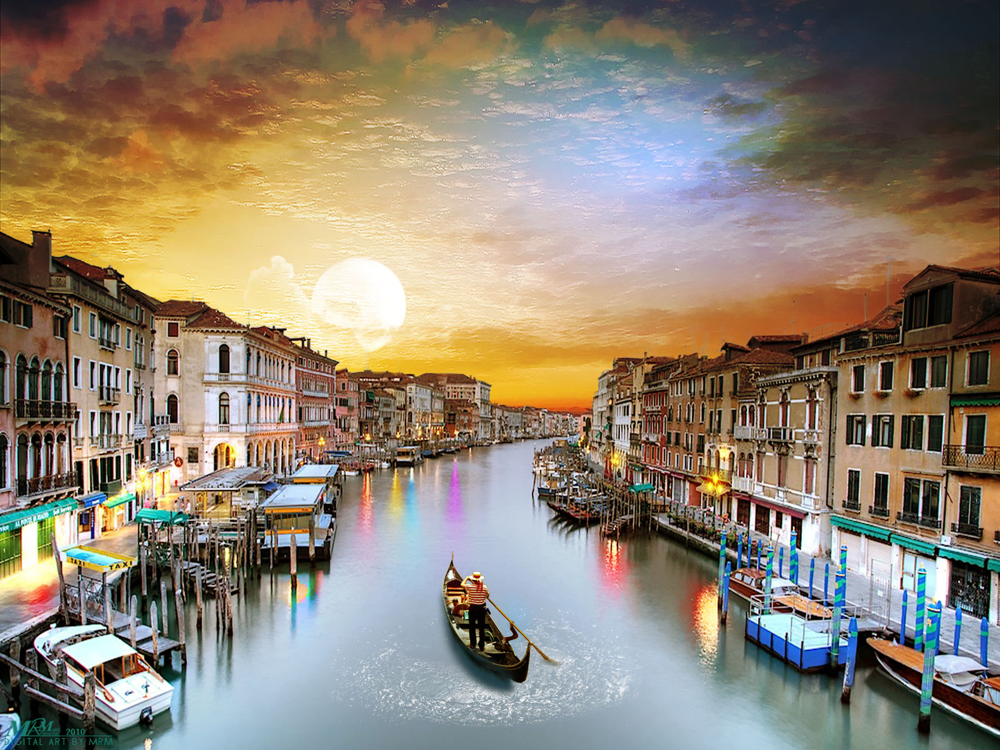

Italy, a Southern European country known for its rich cultural heritage and historical landmarks, is home to iconic sites such as Rome's Colosseum and Venice's canals. Renowned for its contributions to art, fashion, and cuisine, Italy has produced influential figures like Leonardo da Vinci and Michelangelo. With a population of about 60 million, Italy's diverse regions offer a blend of ancient traditions and modern lifestyles, making it a major global tourism and cultural hub.
|  |
Top Attractions in Italy
- Colosseum - Rome
- Venice Canals - Venice
- Leaning Tower of Pisa - Pisa
- Florence Cathedral (Duomo) - Florence
- Amalfi Coast - Southern Italy
- Cinque Terre - Liguria